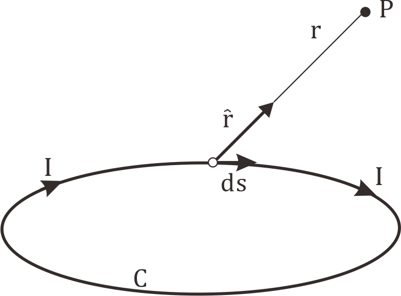
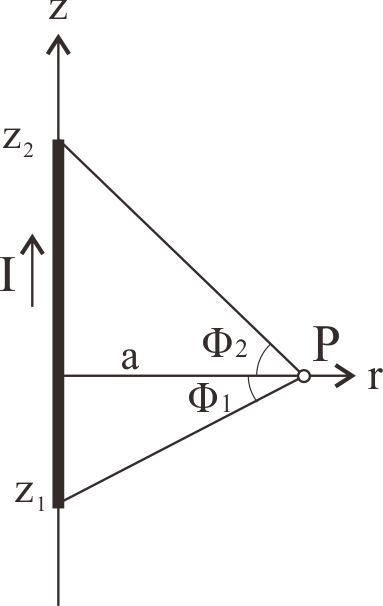
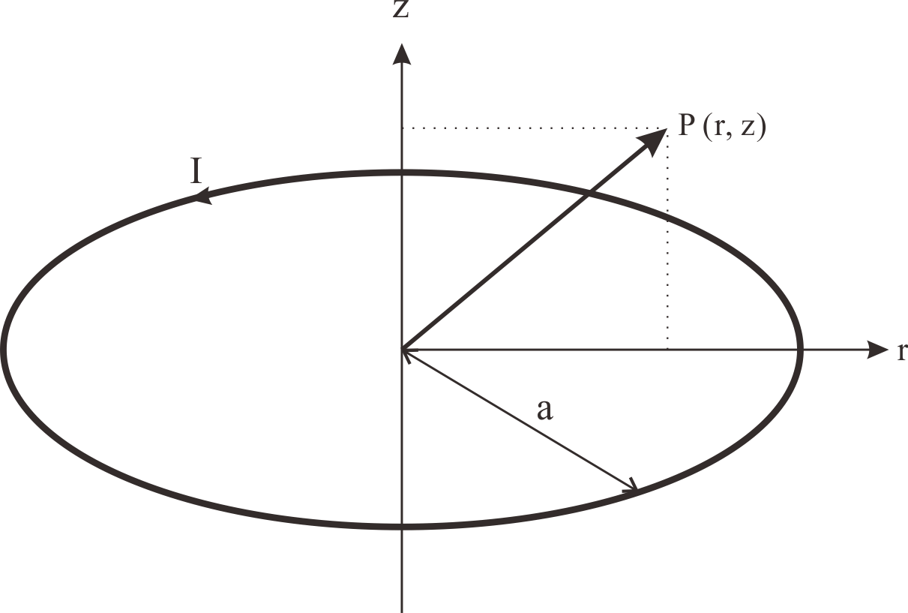
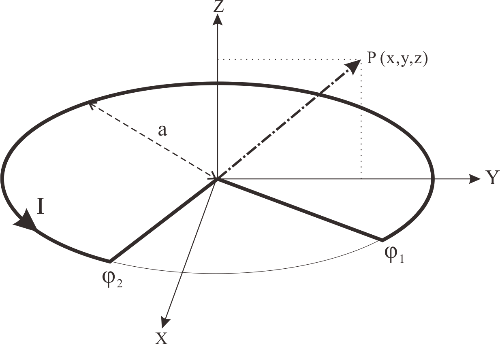

| μ0 : | 真空中の透磁率=4π*10-7 |
| I : | 電流 (A) |
| ds : | 電流ベクトル |
| \(\hat{r}\) : | 導体の位置ベクトル |
| r : | 計算点Pまでの距離(m) |

| I : | 電流 (A) |
| a : | 計算点Pまでの距離 (m) (A) |
| I : | 電流 (A) |
| a : | 計算点Pまでの距離 (m) |
| z1, z1 : | P点からの直線の始点終点z座標 (m) |

| I : | 電流 (A) |
| a : | 計算点Pまでの長さ (m) |
| K(k）, E(k) : | 第１種と第２種完全楕円積分 (m) |


| Griffiths [4] | ← | Urankar [5] | ← | |
| r (m) | Bϕ (T) | Az (Tm) | Bϕ (T) | Az (Tm) |
| 0.1 | 1.99007438 | 0.59964459 | 1.99007438 | 0.59964459 |
| 0.2 | 0.98058068 | 0.46248767 | 0.98058068 | 0.46248767 |
| 0.5 | 0.35777088 | 0.28872710 | 0.35777088 | 0.28872710 |
| 1.0 | 0.14142136 | 0.17627472 | 0.14142136 | 0.17627472 |
| Smythe [6] | ← | Urankar [5] | ← | |
| r (m) | Bz (T) | Aϕ (Tm) | Bz (T) | Aϕ (Tm) |
| 0.0 | 1.25663706 | 0.00000000 | 1.25663706 | 0.00000000 |
| 0.2 | 1.43423011 | 0.13405825 | 1.43423011 | 0.13405825 |
| 0.4 | 2.83633321 | 0.35947642 | 2.83633321 | 0.35947642 |
| 0.6 | -1.33812661 | 0.32891427 | -1.33812661 | 0.32891427 |
| 0.8 | -0.26630855 | 0.14690477 | -0.26630855 | 0.14690477 |
| 1.0 | -0.10834637 | 0.08731526 | -0.10834637 | 0.08731526 |
| y=0, | z=0 | Babic [8] | ← | Gonzalez [7] | ← | |
| ϕ1 (deg) | ϕ2 (deg) | x (m) | Bz (T) | Ay (Tm) | Bz (T) | Ay (Tm) |
| -180 | 180 | 0.0 | 1.25663706 | 0.00000000 | 1.25663706 | 0.00000063 |
| ^ | ^ | 0.2 | 1.43423011 | 0.13405825 | 1.43423011 | 0.13405825 |
| ^ | ^ | 0.4 | 2.83633321 | 0.35947642 | 2.83633321 | 0.35947642 |
| ^ | ^ | 0.6 | -1.33812661 | 0.32891427 | -1.33812661 | 0.32891427 |
| -90 | 90 | 0.0 | 0.62832013 | 0.20000031 | 0.62832013 | 0.20000031 |
| ^ | ^ | 0.2 | 1.06077293 | 0.28424628 | 1.06077293 | 0.28424628 |
| ^ | ^ | 0.4 | 2.61268564 | 0.47777305 | 2.61268564 | 0.47777305 |
| ^ | ^ | 0.6 | -1.47929065 | 0.42573271 | -1.47929065 | 0.42573271 |
| y=0, | z=0 | - | Urankar [5] | ← |
| ϕ1 (deg) | ϕ2 (deg) | x (m) | Bz (T) | Ay (Tm) |
| -180 | 180 | 0.0 | 1.25663706 | 0.00000063 |
| ^ | ^ | 0.2 | 1.43423011 | 0.13405825 |
| ^ | ^ | 0.4 | 2.83633321 | 0.35947642 |
| ^ | ^ | 0.6 | -1.33812661 | 0.32891427 |
| -90 | 90 | 0.0 | 0.62832013 | 0.20000031 |
| ^ | ^ | 0.2 | 1.06077293 | 0.28424628 |
| ^ | ^ | 0.4 | 2.61268564 | 0.47777305 |
| ^ | ^ | 0.6 | -1.47929065 | 0.42573271 |